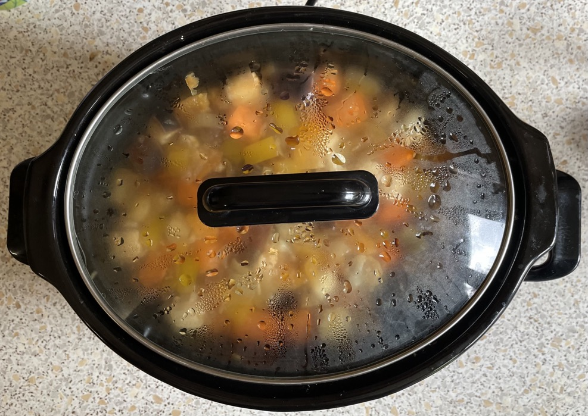
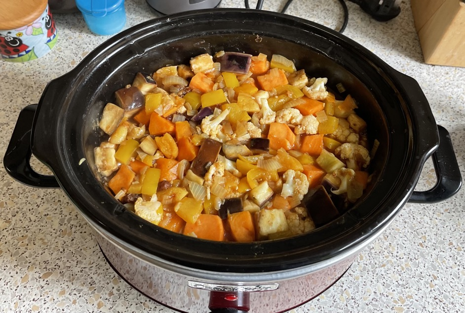

Vegetable tagine
Sweet potatoes
- Roast at 160°C for 10 mins
- 500g (after peeling) sweet potatoes cubed
Tagine
- Heat until soft in 5L stock pot
- olive oil
- 2 large onions
- 1 pepper
- Add and cook for 2 mins
- 4 cloves garlic
- 2 tbspras el hanout
- Add and simmer on low heat for 30 mins
- sweet potatoes
- corgette / aubergine / squash / cauliflower
- 500ml vegetable stock (with salt)
- 200ml passata
- 200g apricots cut into 3s with scissors
- 50g raisins
- skin of 1 preserved lemon finely chopped
- 1 tsp Alleppo pepper
- Add and cook for 10 mins
- 1 tin artichokes quartered
- 1 tin chickpeas drained
- 100-150g black olives rinsed & halved
- Add
- 2 tbsp harissa
- juice of ½ lemon
Serving
Notes
- Use 1kg veg, try different combinations
- Slow cook 4 hours: 3 hours then add chickpeas and artichokes, use stock to rinse pan after onions
3 May 2023
- ½ cauliflower & aubergine

